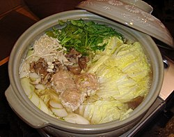
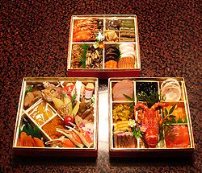
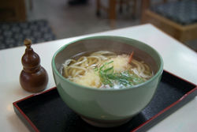

Mâncare osechi
Nabemono

Nabemono sunt mâncăruri pregătite într-o oală mare pe masă, în fața oaspeților. Felurile principale de nabemono sunt mizutaki, yudōfu, udonsuki, kanisuki, shabushabu și sukiyaki.
Menrui sunt mâncăruri de tăiței, servite reci sau calde. Cele mai cunoscute feluri de tăiței sunt udon, sōmen și soba. Primele două sunt făcute din făină de grâu, iar soba din făină de hrișcă. Sōmen sunt tăiței uscați, dar udon și soba pot fi tăiței uscați sau proaspeți.
Gohanmono sunt mâncăruri de orez amestecat cu alte ingrediente: sekihan (orez amestecat cu fasole azuki), takikomigohan (primăvara este orez cu mazăre sau mlădițe de bambus, iar toamna este orez amestecat cu ciuperci matsutake sau castane. Domburimono sunt mâncăruri unde în castron, peste orezul fiert, se pun tot felul de alte ingrediente (șnițel pané, de exemplu).
Sunomono (pește crud sau fiert cu zarzavaturi, condimentat cu oțet și zahăr) și aemono (pește și zarzavaturi acoperite cu o pastă făcută din tōfu, susan măcinat și miso).

Shirumono sunt supele, care sunt de două feluri: sumashijiru (o supă clară) și misoshiru (din pastă miso). Ingredientele pot fi pește alb, diferite moluște și crustacee (creveți etc.), tōfu (un fel de pateu fără miros făcut din fasole soia), carne de pasăre, alge marine etc.
Yakimono sunt mâncăruri fripte (pește, moluște și crestacee, carne, zarzavaturi).
Nimono sunt mâncăruri fierte (condimentate cu sare, sos de soia, sake, mirin, zahăr, oțet etc.).
Agemono sunt mâncăruri prăjite în ulei. Cele mai cunoscute sunt tempura (pește, zarzavaturi etc. împachetate în aluat nefermentat înainte de prăjire), karaage (ingredientele- deseori carne- sunt acoperite cu făină sau amidon de arorut Maranta arundinacea) sau tatsuage (carne de pasăre condimentată cu sos de soia și sake înainte de prăjire).
Mushimono sunt mâncăruri gătite cu aburi. Cea mai cunoscută mâncare este chawan mushi. Alte mâncăruri din această categorie sunt shiomushi (condimentate cu sare) și sakamushi (condimentate cu sare și sake).